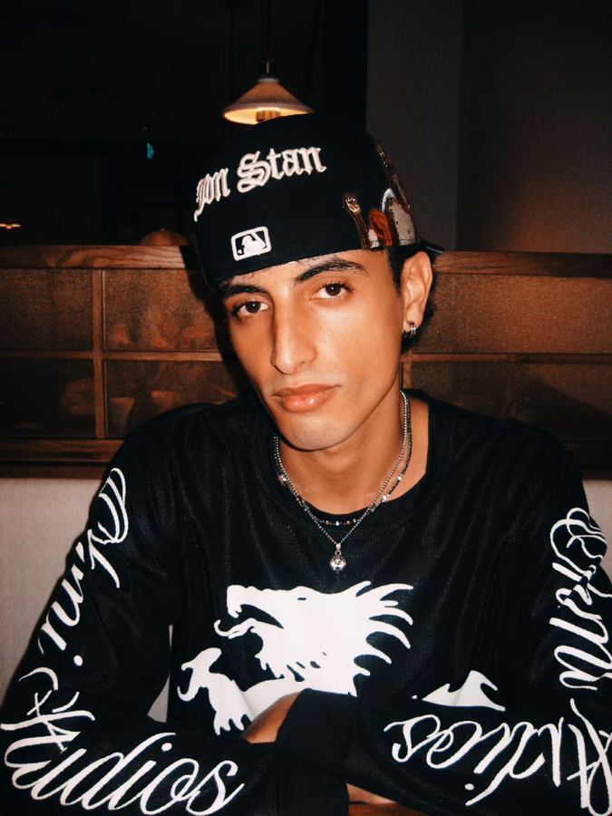

Computer Science
Algorithms, systems and software engineering — the academic grounding underneath everything visual I make. Structure is not the opposite of beauty; it is the scaffolding for it.
Foundation
Model Photographer Creative Director
Exploring the intersection between technology and emotion.
Identity
Born Morocco, 2000
Based Shenzhen, 2023 —
Born in Morocco, shaped by mathematics and code — I found the most interesting space lives at the edge between what is logical and what is felt.
Living in China has expanded everything. A new language, a new visual grammar, a new understanding of what silence means in a different culture.
I model, photograph, direct and design — one continuous act of paying attention.

Currently based in
Open to modeling bookings, creative collaboration and direction — anywhere the work is worth travelling for.
Contact Sheet
Morocco × Shenzhen
Select a frame to read it
No frames in this category.
Moving Images
Stills below
Reels available on request
 In edit
In edit
 In edit
In edit
 In development
In development
Practice
Six disciplines
One way of looking
Editorial, lookbook and campaign work. Ten years of sport taught me what a body does under direction — I arrive knowing my angles and I hold a frame without being told twice.
Portrait, street and documentary. Being photographed constantly rewired how I photograph others: I know exactly how it feels on the other side of the lens, so I direct gently and shoot fast.
Shooting and cutting short-form film. Composition first, movement only when it earns its place. Colour grading is where I spend the most time and the least patience.
Deciding what a shoot is actually about before anyone picks up a camera. Moodboards, casting, styling, location — the unglamorous decisions that determine whether the images mean anything.
Visual identity, editorial layout and typography. A CS degree makes you good at systems; design is where systems have to also be beautiful, which is a much harder constraint.
Computer Science by training. I build the tools I need — generative visuals, interactive pieces, and sites like this one, written by hand rather than assembled from a template.
Technology & AI
BSc Computer Science
Morocco, 2018 — 2022
Algorithms, systems and software engineering — the academic grounding underneath everything visual I make. Structure is not the opposite of beauty; it is the scaffolding for it.
Generative systems, machine perception, and the increasingly blurred line between human and machine creativity. I use these tools, and I argue with them.
Tools that serve the art rather than replace it — generative visuals, interactive pieces, and experiments that only exist because I could write them myself.
How machine learning reshapes fashion, identity and authorship. The interesting question is not what AI can generate — it is what remains worth making by hand.
Immersive, cinematic, technically precise. Every frame on this page is a real photograph and every line of this site was written rather than generated.
Turning information into something a person can feel. Data as a medium for storytelling, not a substitute for having something to say.
Discipline
Strength & swimming
Six days a week
Strength work as meditation. Every session is a conversation with yourself about who you intend to become — conducted entirely in reps.
Water as the purest form of resistance. Silence beneath the surface, and breath as the only metric that matters.
Physical discipline bleeds into creative discipline. The same presence a heavy set demands is the presence a camera demands.
Form and function as one thing. The body is a creative medium — sculpted, expressed, and presented with intention.
Journey
11,000 km
Two continents
Born into the richness of Moroccan culture — warmth, artistry, and a tradition of storytelling much older than any camera. The beginning of a story still being written.
Computer Science. Four years of discovering that logic and beauty are not opposites — they are the same impulse, expressed in different notation.
First steps into modeling, photography and design. Technology and art were never separate for me — they were only waiting to be pointed at the same thing.
Relocating to one of the most dynamic creative and technological environments on earth. A new language, a new visual grammar, a new understanding of silence.
Philosophy
I don’t separate my disciplines. Everything I do is one continuous act of paying attention.
Technology without emotion is just machinery. Emotion without precision is just noise. I want the space between.
Being between cultures taught me that identity is not a fixed point. It is a direction of travel.
The camera doesn’t lie — but it doesn’t tell the whole truth either. That space between is where I work.
I don’t separate my disciplines. Everything I do is one continuous act of paying attention.
Technology without emotion is just machinery. Emotion without precision is just noise. I want the space between.
Being between cultures taught me that identity is not a fixed point. It is a direction of travel.
The camera doesn’t lie — but it doesn’t tell the whole truth either. That space between is where I work.
Contact
Open to modeling bookings, creative collaboration, cinematography, and conversations that go somewhere unexpected.